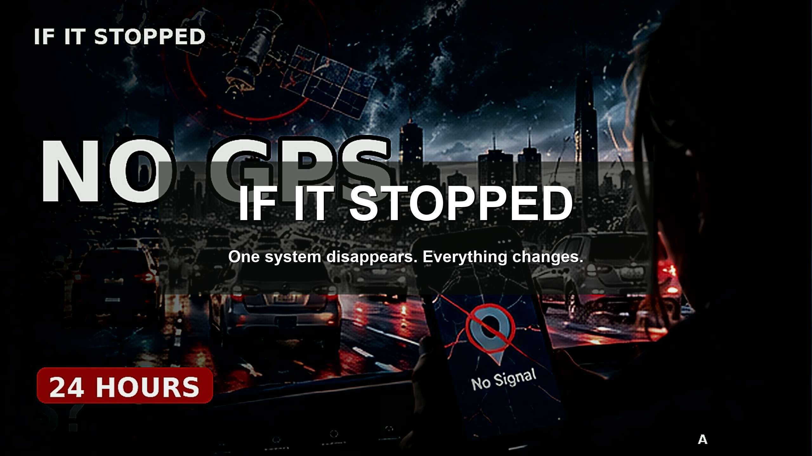

Ask one exact question.
Every episode opens with a specific What if scenario rather than a generic catastrophe.

CINEMATIC SYSTEM EXPLAINERS
One system disappears. We follow the real dependencies, backups, bottlenecks, and surprising things that still work.
Trace the hidden chainSYSTEM / DEPENDENCY / CONSEQUENCE
IF IT STOPPED explores the infrastructure modern life quietly depends on. Each story removes one system, separates immediate effects from later consequences, and follows the backup behavior that changes the outcome.
Every episode opens with a specific What if scenario rather than a generic catastrophe.
Resilience matters. We examine fallbacks, workarounds, and the systems that continue operating.
The payoff is the constraint that actually changes the system, not the loudest visual effect.
SCENARIO LIBRARY
Each subject gets its own mechanism and visual language. No recycled disaster template.
Navigation is only the visible layer. Timing, dispatch, surveying, and logistics depend on positioning too.
+A payment failure becomes a queue problem, then a cash problem, then an operations problem.
+The first question is not whether traffic stops. It is how intersections, responders, and drivers adapt.
+Thermal mass, door openings, backup power, and prioritization decide what fails first.
+HOW THE STORIES WORK
Assumptions are stated. Immediate effects are separated from second-order effects. Backup layers are tested. Maps, timelines, queue graphics, and dependency diagrams exist to make causality easier to see.
The goal is understanding, not panic. No fake alerts, no sabotage instructions, and no unsupported certainty.
NEW EXPERIMENTS ON YOUTUBE